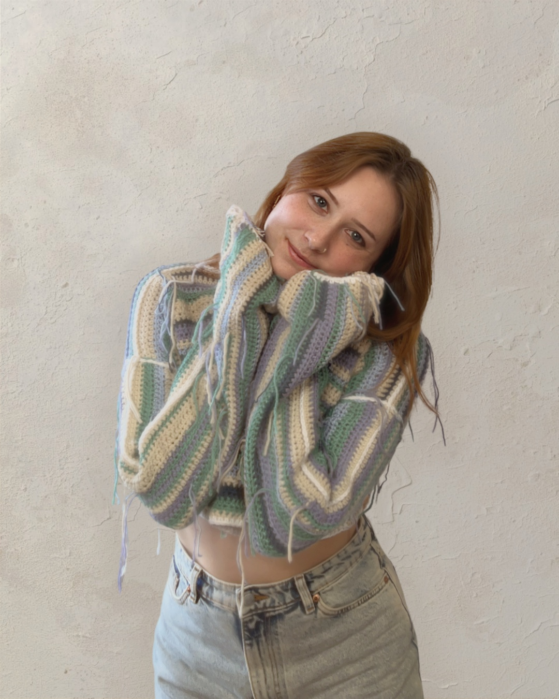
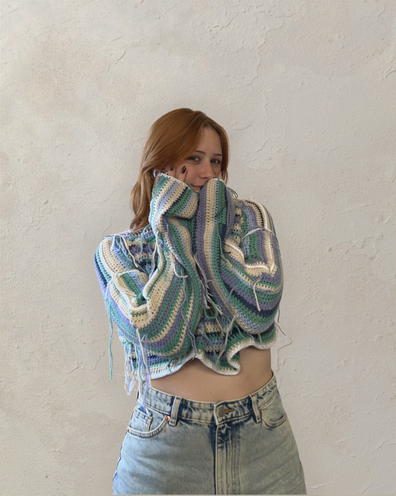
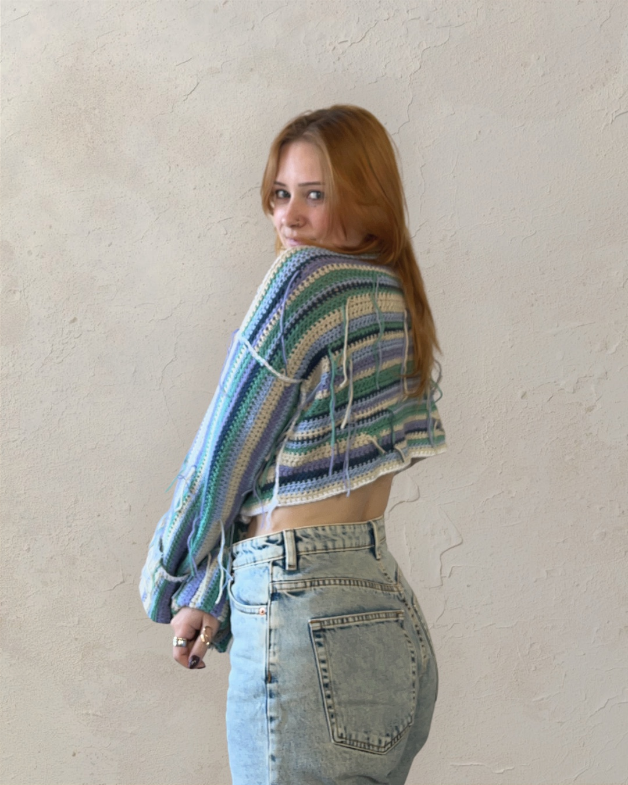
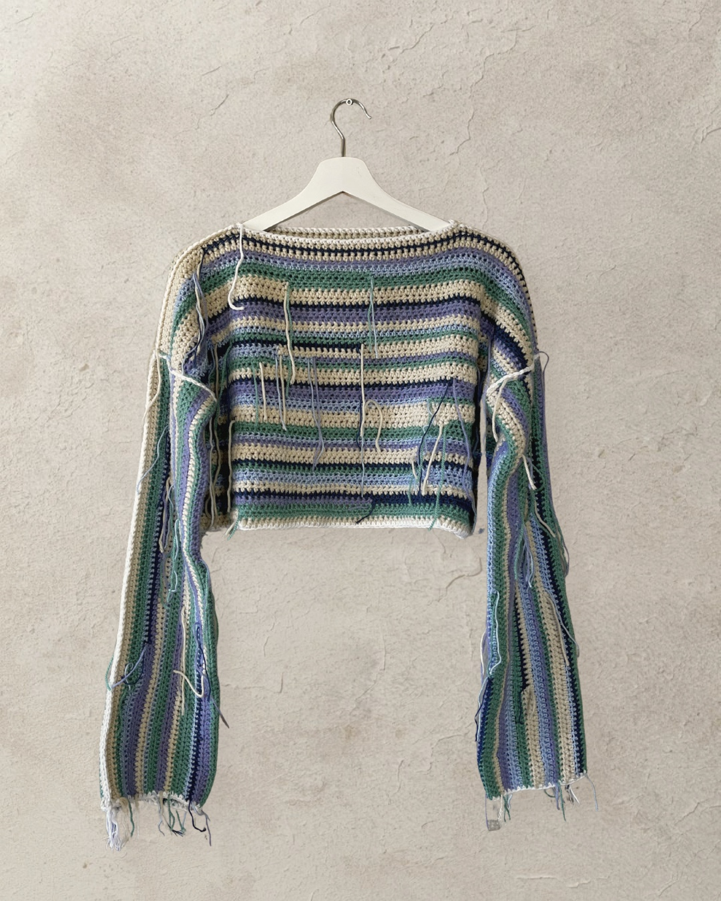
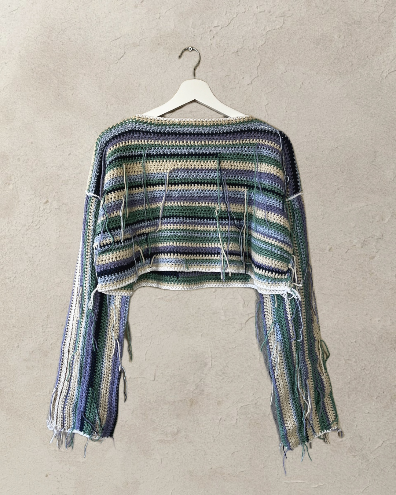
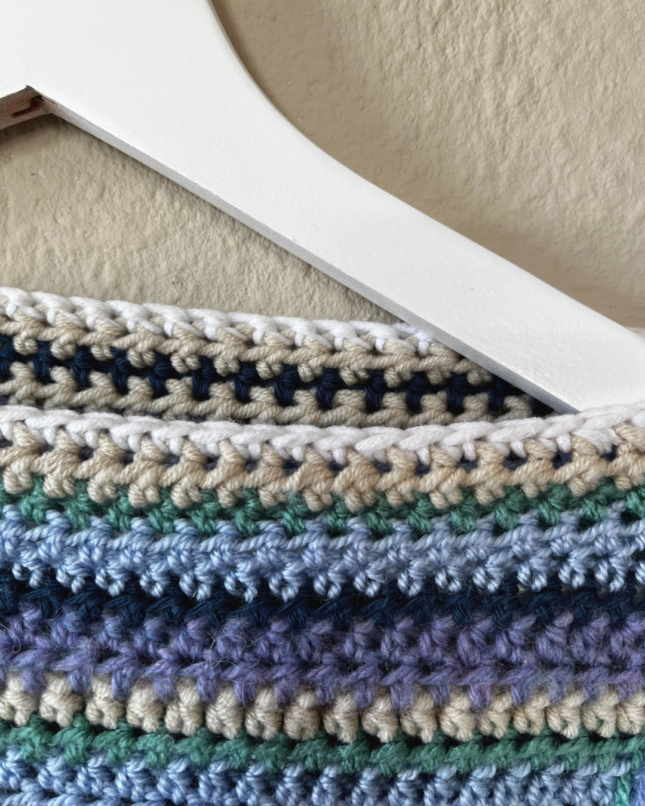
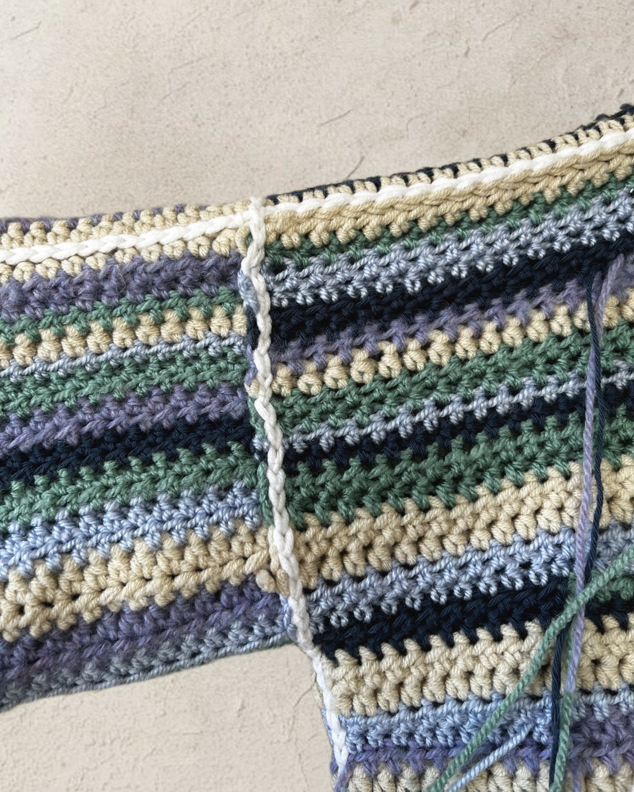
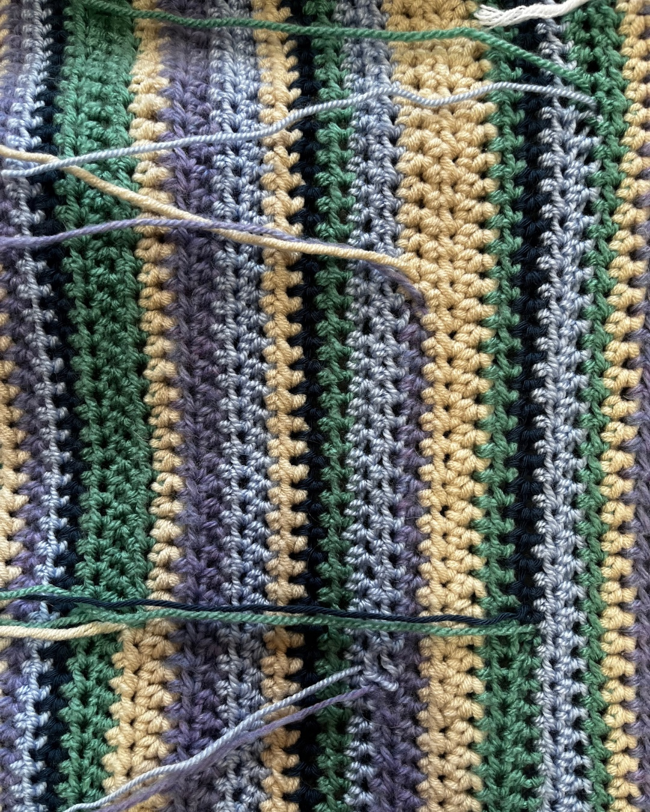

Uniek handgemaakt
Unravel Sweater
Een gehaakte cropped sweater in zachte tinten groen, blauw, lila en crème. De zichtbare losse draden geven het ontwerp zijn eigen, onaffe karakter.
ACA-creaties ontstaan zonder massaproductie en zijn niet bedoeld om exact opnieuw gemaakt te worden.
Van dichtbij
Gemaakt om anders te zijn.
De Unravel Sweater laat juist zien wat normaal verborgen blijft: draadjes, overgangen en het handwerk zelf. Geen fabrieksperfectie, maar een kledingstuk waarvan je kunt zien dat het met de hand is ontstaan.






